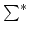
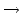
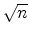
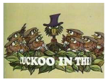

One of the most fundamental data structure problems is the dictionary problem: given a set D
of words you want to be able to quickly determine if any given query string q
is present in the dictionary D
or not. Hashing is a well-known solution for the problem. The idea is to create a function h
:
  [0..n - 1]
from all strings to the integer range
0, 1,..., n - 1
, i.e. you describe a fast deterministic program which takes a string as input and outputs an integer between 0 and n - 1
. Next you allocate an empty hash table T
of size n
and for each word w
in D
, you set
T[h(w)] = w
. Thus, given a query string q
, you only need to calculate h(q)
and see if T[h(q)]
equals q
, to determine if q
is in the dictionary. Seems simple enough, but aren't we forgetting something? Of course, what if two words in D
map to the same location in the table? This phenomenon, called collision, happens fairly often (remember the Birthday paradox: in a class of 24 pupils there is more than 50%
chance that two of them share birthday). On average you will only be able to put roughly 
-sized dictionaries into the table without getting collisions, quite poor space usage!

A stronger variant is Cuckoo Hashing (Cuckoo Hashing was suggested by the danes R. Pagh and F. F. Rödler in 2001). The idea is to use two hash functions h1
and h2
. Thus each string maps to two positions in the table. A query string q
is now handled as follows: you compute both h1(q)
and h2(q)
, and if
T[h1(q)] = q
, or
T[h2(q)] = q
, you conclude that q
is in D
. The name ``Cuckoo Hashing" stems from the process of creating the table. Initially you have an empty table. You iterate over the words d
in D
, and insert them one by one. If
T[h1(d )]
is free, you set
T[h1(d )] = d
. Otherwise if
T[h2(d )]
is free, you set
T[h2(d )] = d
. If both are occupied however, just like the cuckoo with other birds' eggs, you evict the word r
in
T[h1(d )]
and set
T[h1(d )] = d
. Next you put r
back into the table in its alternative place (and if that entry was already occupied you evict that word and move it to its alternative place, and so on). Of course, we may end up in an infinite loop here, in which case we need to rebuild the table with other choices of hash functions. The good news is that this will not happen with great probability even if D
contains up to n/2
words!
On the first line of input is a single positive integer
1 t50
specifying the number of test cases to follow. Each test case begins with two positive integers
1mn10000
on a line of itself, m
telling the number of words in the dictionary and n
the size of the hash table in the test case. Next follow m
lines of which the i
:th describes the i
:th word di
in the dictionary D
by two non-negative integers
h1(di)
and
h2(di)
less than n
giving the two hash function values of the word di
. The two values may be identical.
t50
specifying the number of test cases to follow. Each test case begins with two positive integers
1mn10000
on a line of itself, m
telling the number of words in the dictionary and n
the size of the hash table in the test case. Next follow m
lines of which the i
:th describes the i
:th word di
in the dictionary D
by two non-negative integers
h1(di)
and
h2(di)
less than n
giving the two hash function values of the word di
. The two values may be identical.
For each test case there should be exactly one line of output either containing the string ``successful hashing" if it is possible to insert all words in the given order into the table, or the string ``rehash necessary" if it is impossible.
2
3 3
0 1
1 2
2 0
5 6
2 3
3 1
1 2
5 1
2 5
successful hashing
rehash necessary